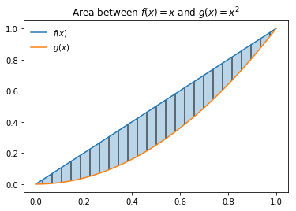
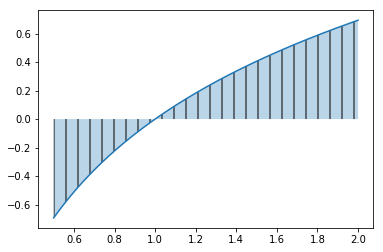

In [1]:
%matplotlib inline
import matplotlib.pyplot as plt
import numpy as np
import sympy as sy
now you can type and use markdown
Defining Functions¶
Here is where we define functions.
In [2]:
#defining a function f
def f(x):
return x
In [3]:
f(3)
Out[3]:
3
In [4]:
def g(x):
return x**2
In [5]:
g(3)
Out[5]:
9
In [8]:
x = np.linspace(0, 1, 100)
In [16]:
plt.plot(x, f(x), label = '$f(x)$')
plt.plot(x, g(x), label = '$g(x)$')
plt.fill_between(x, f(x), g(x), alpha = 0.3, hatch = '|')
plt.title('Area between $f(x)= x$ and $g(x) = x^2$')
plt.legend(frameon = False)
Out[16]:
<matplotlib.legend.Legend at 0x111286390>

In [17]:
x = sy.Symbol('x')
\[\int_0^1 x - x^2 dx\]
In [18]:
sy.integrate(f(x)-g(x))
Out[18]:
-x**3/3 + x**2/2
In [19]:
sy.integrate(f(x)-g(x), (x, 0, 1))
Out[19]:
1/6
\[\int_0^{2\pi} \cos{x} dx\]
In [21]:
sy.integrate(sy.cos(x), (x, 0, 2*sy.pi))
Out[21]:
0
Problem 3b¶
\[\int_{1/2}^2 \ln{x} dx\]
In [22]:
#evaluate the integral
x = sy.Symbol('x')
sy.integrate(sy.log(x), (x, 1/2, 2))
Out[22]:
-1.15342640972003 + 2*log(2)
In [27]:
#plot the integral or area
x = np.linspace(0.5, 2, 1000)
def f(x):
return np.log(x)
plt.plot(x, f(x))
plt.fill_between(x, f(x), alpha = 0.3, hatch = '|')
Out[27]:
<matplotlib.collections.PolyCollection at 0x1116ac518>

The area under \(\ln{x}\) from \(x = 0.5\) to \(x = 2\) is -1.15 + 2*log(2)